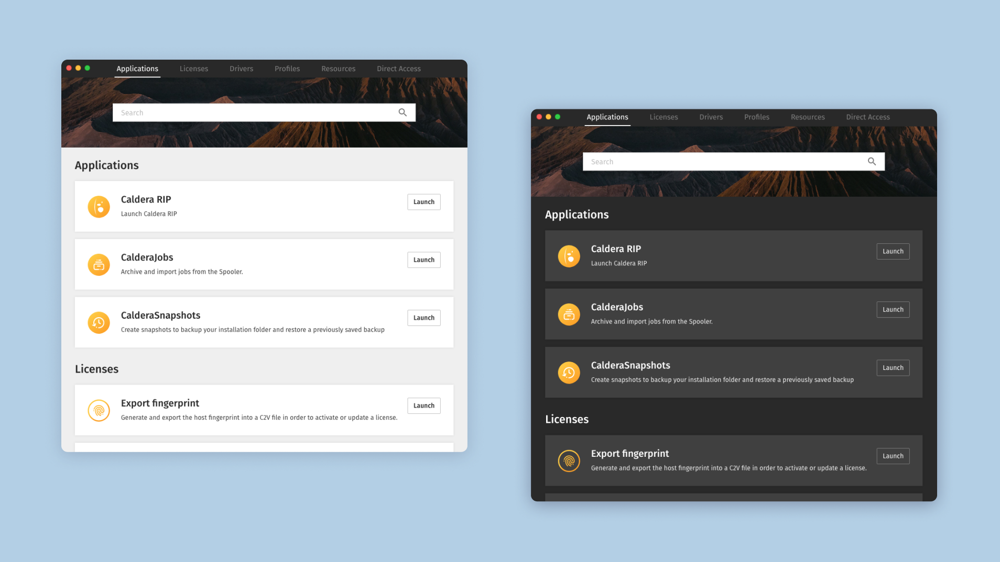
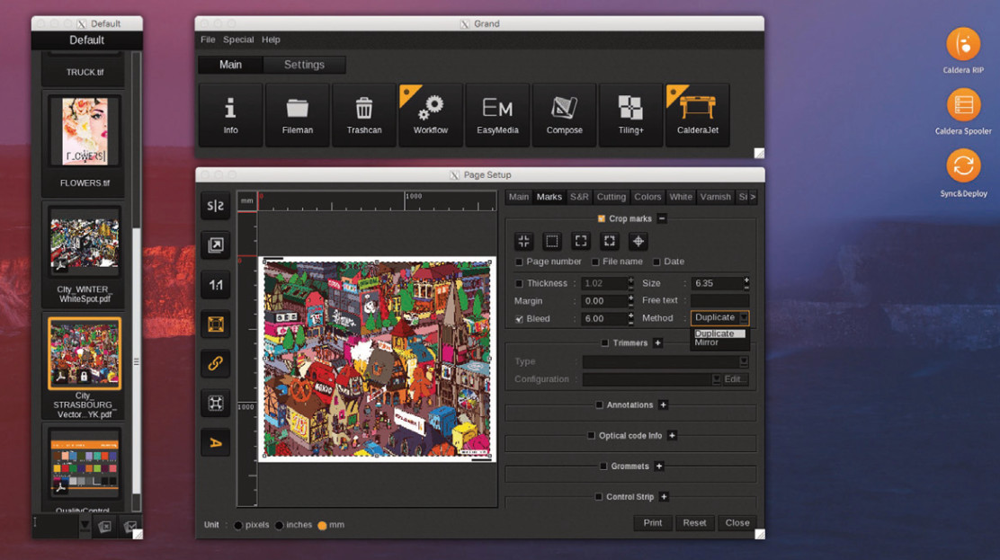
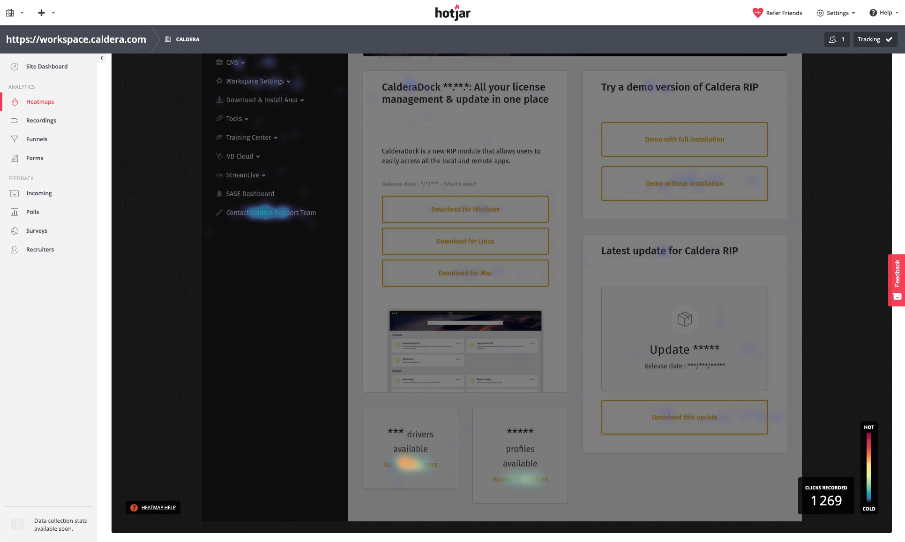

Create a companion application to initiate transition towards a new product portfolio
Product: Caldera Dock
Problem statement
Developed since 2003, CalderaRIP uses an aging technology which will soon no longer be supported by all operating systems. In addition, this technology is not scalable, the new features take a considerable time to be implemented, which represents a risk of missing the time to market against our competitors.
There is therefore a real need for transition to a more modern technology, in order to guarantee the software lifetime and the speed of iterations.
In order to better manage the transition, it has been decided to proceed step by step by dividing the software bricks and implement them along with new features in a new tool that will coexist with CalderaRIP. This application is called CalderaDock. The first functionality to be developed directly in this new application is the management of installation backups.
Legacy version of CaleraRIP
The user story
As a production manager, I want to have quick access to the necessary resources (including software updates, drivers, profiles) to maintain and backup a production station, and avoid interruptions during the printing process.
Card sorting
This technique helped me to evaluate the information architecture of the application.
After having arranged the first contents, I suggested to study the possibility of adding other elements such as documents necessary for printing (technical target, CutContours library), or tools allowing to optimize the management of licenses.
Card sorting to organize resources
Heatmaps
We used Hotjar on our service platform to define, using heatmaps, which resources were most downloaded by our customers. Drivers and profiles are by far the most popular content, so they had their own entry in the main menu.
Taskflow
I created a task flow in order to specify if part of the management of the licenses had their place in this application: activation and attachment of a license to a station have been implemented here.
Task flow for license management
Outcome
During his presentation at the Viscom Milano and SGIA Las Vegas print exhibitions, CalderaDock received good feedback from customers. In a few months, a dozen apps have already been moved from the Caldera RIP software, and new apps have been implemented.
This product was the first to use our design system, called BBQ.